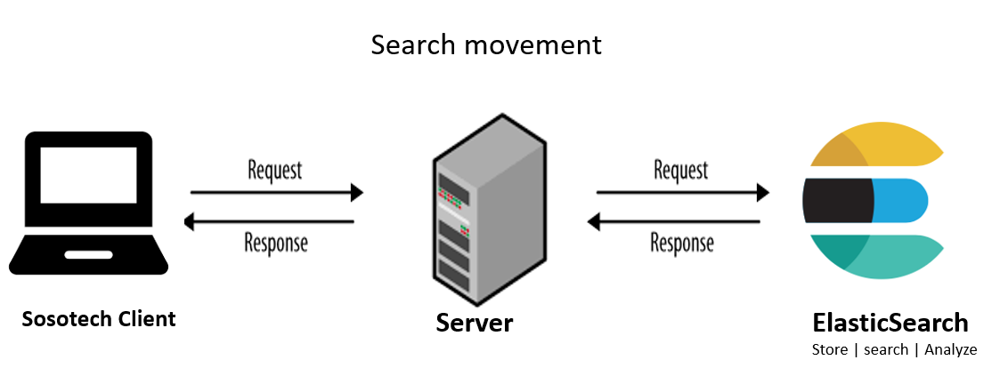

ELK - Elastic Stack
ELK Stack is the world’s most popular log management platform. The ELK stack is an acronym used to describe a stack that comprises of three popular projects: Elasticsearch, Logstash, and Kibana.
-
Elasticsearch is a distributed search and analytics engine built on Apache Lucene
-
Logstash is used for both shipping as well as processing and storing logs
-
Kibana is a visualization tool which is hosted through Nginx or Apache
Some popular Use Cases for ELK are:
Logging, Matrics, Security Analysis, Business Analysis - Logging - logging and analysing Data, like gaming data - Matrics - like NASA Rover can sent telematrics, sensor data - Security Analysis - Helps with securing comunication in Apps like Slack - Business Analysis - Helps with matching people
ElasticSearch
With ElasticSearch, User can sends search quary to your website and your server send those requests to ElasticSearch, Elasticsearch then processes this request and Responds back to the user, through the Server.
Elasticsearch Architecture: Key Components
Elasticsearch Cluster is composed of a group of nodes that store data.
Elasticsearch Node is an instance that runs in a cluster. Multiple nodes can be run on a single machine. When Elastic is running, you will have an instance of elastic known as Node. Each Node Has a unique ID and a node. Each Node belongs to a single cluster. Data is stored as documents in Elasticsearch. Indices are used to group documents that are related to each other. When an Index is created, it comes with a Shard, by default. There are the three main options to configure an Elasticsearch node:
- Elasticsearch master node
- Elasticsearch data node
- Elasticsearch client node
Search movement - client --> servers --> ElasticSearch

Shards is where data is stored. What you create an Index, you can create multiple shards that are distributed across nodes. Each shard has its replica to recover data in case of node failure. The primary shard and replica shard is always placed on different nodes. Horizontal scaling or scale-out is the main reason to shard a database. The number of shards depends heavily on the amount of data we have.
Shard Example use Case 1

-
A BCBSNC Elastic engineer has 900k documents that they want to store.
-
Each Shard can only Hold a maximum of 300k Documents
-
Two more shards of 300GB each will be added bringing the total storage capacity to 900K Documents
Shard Example use Case 2

Scenario 1:
- An Elastic engineer searches 500k documents that is stored in a single Shard
- The response time for searching 500k Documents in a single shard is 10 seconds.
Scenario 2:
-
An Elastic engineer runs a parallel searches of 500k documents that are distributed in 5 Shard.
-
The response time for searching 100k Documents/Shard will be 2 seconds.
-
So, the response time for searching all 500k Documents that are distributed amongst the 5 shard will still be 2 seconds.
Kibana
Kibana is a data visualization and exploration tool used for log and time-series analytics, application monitoring, and operational intelligence use cases. It offers powerful and easy-to-use features such as histograms, line graphs, pie charts, heat maps, and built-in geospatial support.

Kibana Aggregations
There are two main types of aggregations
-
Metric aggregations
are used to calculate a value for each bucket based on the documents inside the bucket. -
Bucket aggregations are used groups documents together in one bucket according to your logic and requirements, while the Metric aggregations

For More information on Kibana,: Click link
Adding data into Elasticsearch
The main consideration for indexing or adding data into Elasticsearch largely depends on whether you are indexing general content or timestamped data.
General content: Index content like HTML pages, catalogs and other files. Send data directly to Elasticseach from your application using an Elastic language client. Otherwise use Workplace Search content connectors or the Enterprise Search web crawler.
Timestamped data: The preferred way to index timestamped data is to use Elastic Agent. Elastic Agent is a single, unified way to add monitoring for logs, metrics, and other types of data to a host.
How to ingest data into Elasticsearch Service
There are 4 main ways in Adding Data to ElasticSearch Service:
-
By using Beats and Logstash
-
By using Kibana
-
By programmatically indexing data
-
Manually adding data
Read more about data ingestion in ElasticSearch Click Link
The index
The index is the basis of Elasticsearch, it is where you store your documents. You can compare it to a table in a database. An index has settings and a mapping which defines how to store and index the documents.
Mapping
Mapping is the process of defining how a document, and the fields it contains, are stored and indexed. Each document is a collection of fields, which each have their own data type. When mapping your data, you create a mapping definition, which contains a list of fields that are pertinent to the document.
What is Elastic integrations
Elastic integrations are a streamlined way to connect your data to the Elastic Stack. Integrations are available for popular services and platforms, like Nginx, AWS, and MongoDB, as well as many generic input types like log files.
For more on Data Integration Click link:
Elastic Agent
Elastic integrations are powered by Elastic Agent. Elastic Agent is a single, unified way to add monitoring for logs, metrics, and other types of data to a host. It can also protect hosts from security threats, query data from operating systems, forward data from remote services or hardware, and more.
Sample Hands-on
I will :
-
Use curl commands to talk to the Elasticsearch REST API. Or if you choose to use Kibana Devtools, thats also ok, because
-
Kibana’s Devtools can automatically recognizes and converts curl commands .
create an index Called middleware
curl -X PUT “localhost:9200/middleware
Delete the index Called middleware
curl -X DELETE “localhost:9200/middleware”
Create an index Called middleware with just one shard and no replicas
PUT /middleware?pretty
{
"settings" : {
"number_of_shards" : 1,
"number_of_replicas" : 0
}
}
loading data into that index Called middleware
PUT /middleware/_mapping
{
"properties": {
"post_time": { "type": "date" },
"username": { "type": "keyword" },
"message": { "type": "text" }
}
}
Now Load some data
- Manually
POST /middleware/_doc/?pretty
{
"user" : "collins",
"post_date" : "2023-16-03T14:10:10",
"message" : "Welcome to Elasticsearch?"
}
see this mediam link, its cool Click-Link